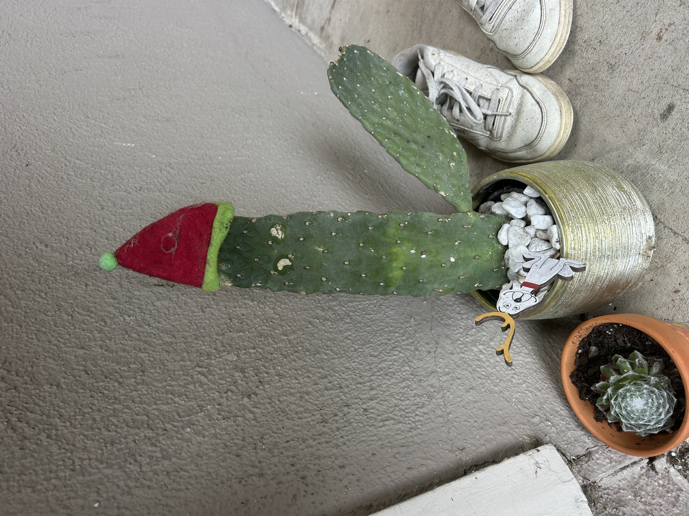
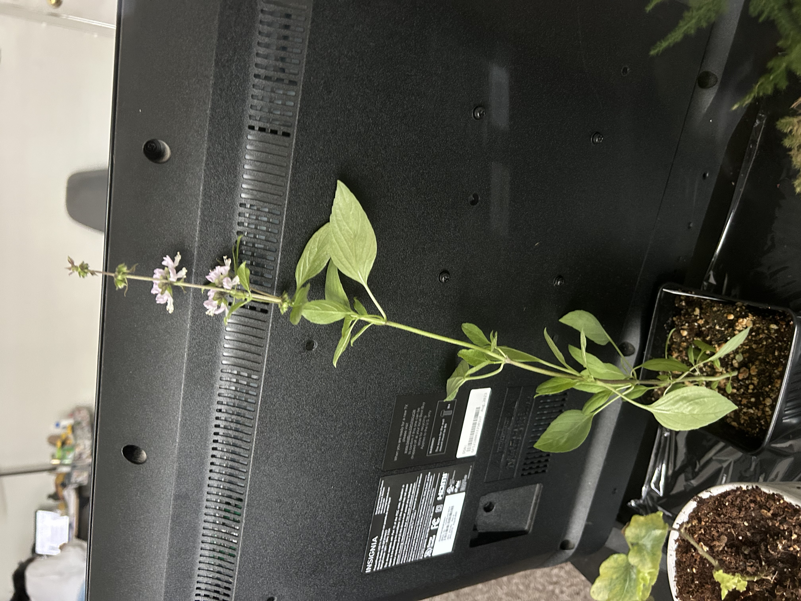
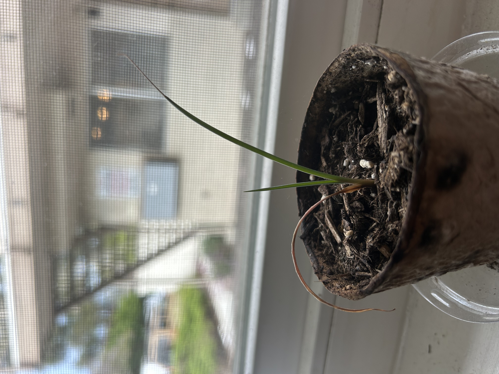
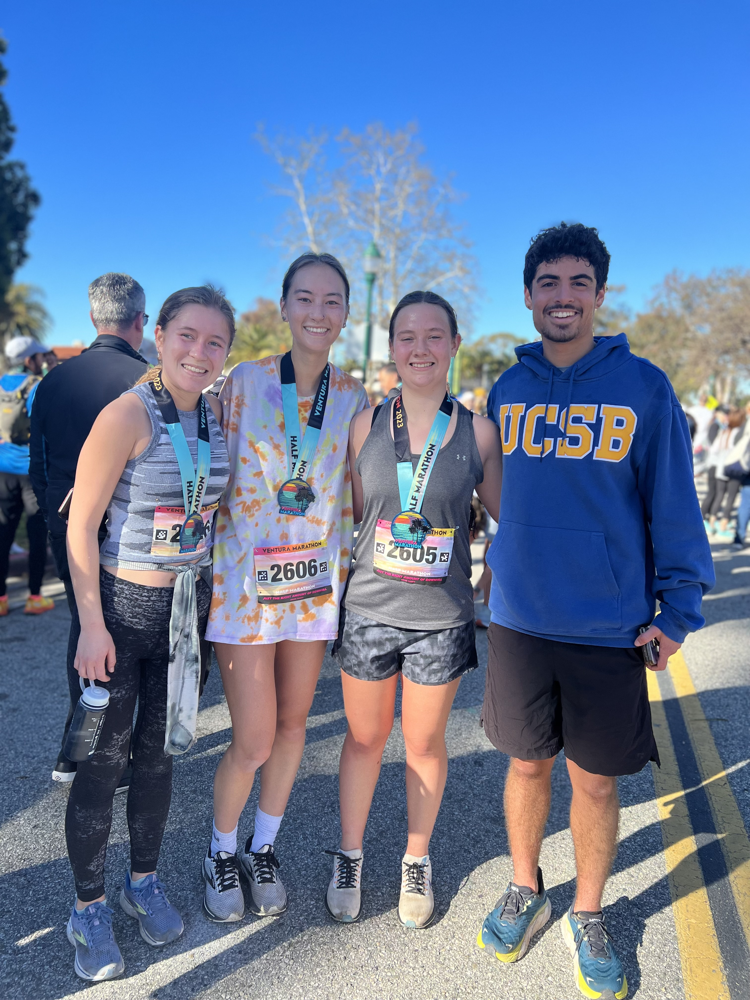
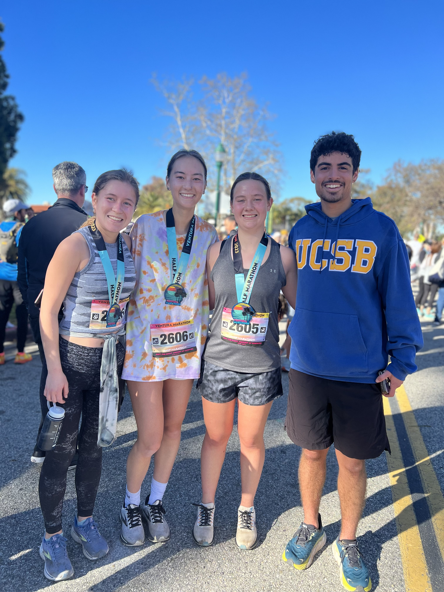

About Me
Growing Up
I grew up in a suburb north of Dallas, Texas, called Frisco, which is where I lived from the time I was born until I moved to study at the University of California, Santa Barbara. I lived with my two parents, and we adopted a little Chihuahua mix named Marty when I was in first grade, and a little Boston Terrier mix named Bunny when I was in sixth grade.
In middle school, I joined my school’s band and played the trumpet. Through band, I met everyone who would become my closest friends throughout the years, as we spent a lot of time with each other each year in band class. In High School, it was required that everyone in band was also in the marching band, so we got to attend every football game in the fall and also participate in competitions against other marching bands in October. My school had a really band program, so we would usually do pretty well in competitions. Every other year, bands could compete to go to the State marching competition, and my band made it both years we got to compete while I was there. We placed eighth in the state my second year, and were in the top twenty my senior year. Band and especially marching band were both really big commitments that took up a lot of my time and energy, but what kept me going through the years was my friends and all of the amazing memories I got to make with them along the way.
During my freshman year of high school, I started running in my free time. But, it wasn’t until my junior year of high school that I decided to join the cross country team halfway through the season. While band often had challenging moments, cross country was even more difficult because at each meet, we had to race a 5k against lots of other girls, which feels like a really long time to run and ends up being pretty painful, if you push yourself. Not only was it physically challenging, it was also always mentally challenging to fight off the urge to start walking whenever I was feeling especially tired or I had gotten a cramp. However, I loved my teammates and, like my band friends, they motivated me to keep showing up to practices every day, and I got to make lots of fun memories with them as well.
My Plant Collection
I’ve always loved having and taking care of plants, so while growing up, I had lots of plants in my room and the rest of my parents’ house. Now that I live in Isla Vista, I have very limited space for plants. Additionally, my apartment only has aast facing windows, which provide a lovely view of the apartment building right next to mine. So, my roommates and I unfortunately struggle to keep our plants that require more light alive.
However, I currently own four plants in my apartment. A joshua tree that I started growing from seed around a year ago, a cactus that came with a Santa hat and googly eyes, and a Thai basil plant and seacliff buckwheat that I recently bought at UCSB’s greenhouse plant sale.
  
As you can see, my joshua tree’s leaves are shriveling up so it doesn’t seem to be doing too well, and I think it’s because it needs more sun than it can get in my east facing window. Also, the googly eyes have fallen off of my cactus.
My Hobbies
One of my main hobbies is reading, and I do it as much as possible. I listen to audiobooks while I run, clean, cook, and walk to class, and I also read before I sleep most nights. The books that I read I borrow on Libby using my Orange County library card, which I have because my mom moved to Orange County when I moved for college.
Another big hobby of mine is running. As I said earlier, I ran cross country while I was in high school, and since then I’ve continued running regularly. I am part of UCSB’s run club, through which I have met some close friends, and I have also participated in the Ventura and Santa Barbara half marathons during my time in college. Hopefully, I will run the 2026 Ventura marathon.
Lots of my other hobbies revolve around nature. I love gardening, which I currently partake in just through taking care of my four plants, but I also love hiking, camping, and going tidepooling. On my most recent camping trip, myself and some friends camped at a state park in San Luis Obispo, and we went on a beautiful ten mile hike.


 
